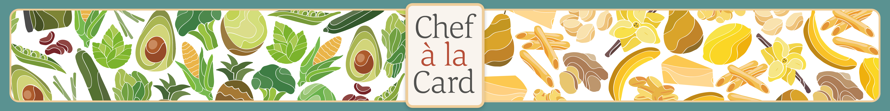

Chef à la Card

Schon wieder Nudeln mit Pesto? Wieder Tiefkühlpizza ? Und schon wieder zum Imbiss um die Ecke, weil dir einfach nichts Neues einfällt, das du kochen könntest?
Schluss damit!
Chef à la Card ist das Spiel, das dich vom Sofa in die Küche lockt. Ob alleine oder in der Gruppe, ob Einkaufsbummel oder Reste-Essen, mit Chef à la Card wirst du nie wieder einfallslos vor deinem Herd stehen und in leere Töpfe starren. Mit über 60 unterschiedlichen Zutaten und neun Zubereitungsmethoden wird eine nahezu unerschöpfliche Quelle an Kombinationsmöglichkeiten für neue Rezepte geboten und eine unbekannte Welt der kulinarischen Wunder eröffnet.
Bist du alleine oder seid ihr zu zweit? Lasst den Zufall wirken und einigt euch am Ende auf das beste Gericht.
Ihr seid eine Gruppe und du fühlst dich bereit, deinen Freund*innen im Kampf um das beste Gericht entgegen zu treten? Du willst deine Kreation an der Spitze sehen? Dann wage etwas Neues!
Versuche dein Gericht durch seltene oder ungewöhnliche Zutaten aufzuwerten und so den benötigten Vorsprung vor deinen Freund*innen durch das integrierte Bonuspunktesystem auszubauen.
Du konntest alle überzeugen?
Glückwunsch! Jetzt müsst ihr nur noch schnell einkaufen und schon kann das Gelage beginnen.
Chef à la Card ist ein Spiel das seine Spieler*innen zum Kochen bringt. Es ist ein Spiel, das es sich zum Ziel gesetzt hat, seinen Spieler*innen den Spaß am Kochen zu lehren und kreative Blockaden zu lösen.
Durch ein einfaches Spielsystem werden unterschiedliche Zutaten in immer neuen Kombinationen zu schmackhaften Kreationen zusammengefügt und helfen so, Neulingen am Herd ebenso wie erfahrenen Köchinnen und Köchen ihren kulinarischen Horizont zu erweitern.
Nach einer erfolgreich gespielten Partie gilt es nur noch die benötigten Zutaten zu besorgen und schon kann es losgehen.
Ob dabei noch am selben Tag gekocht wird oder ob der Spaß auf einen späteren Zeitpunkt verschoben wird, bleibt dabei jedem selbst überlassen.
Haben wir zuviel versprochen? Findet es heraus und erfreut euch und eure Mitmenschen!
Bon Appétit!